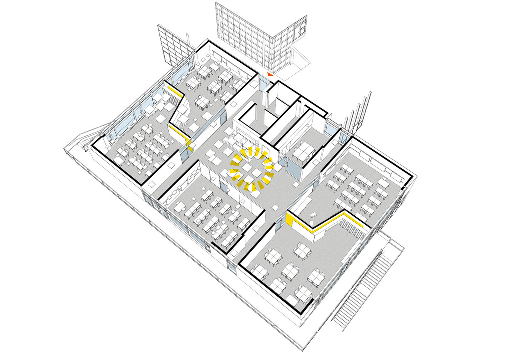
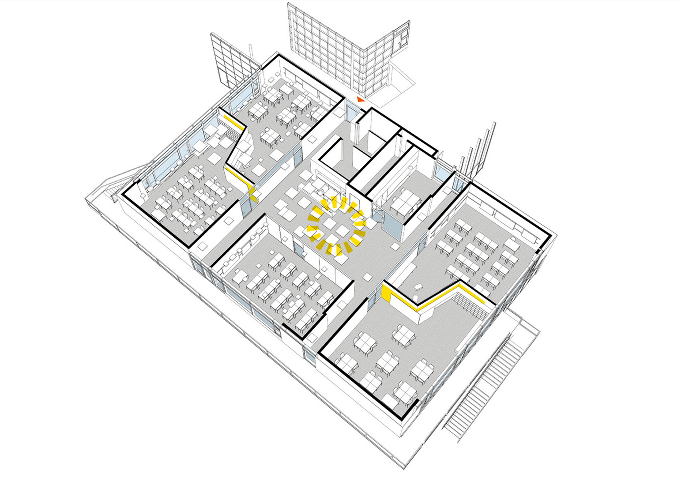

Multifamily House Erding
Communal living in passive house standard designed for seniors and people with disabilities. A distinctive continuous band connects the main structure with auxiliary facilities, enclosing a sheltered garden to the north.


German-trained architect, specializing in high-performance, low-energy architecture with European precision.
Communal living in passive house standard designed for seniors and people with disabilities. A distinctive continuous band connects the main structure with auxiliary facilities, enclosing a sheltered garden to the north.
A bright, playful childcare center that brings daylight, outdoor play, and community together on a narrow site near Munich. The building meets passive-house standards with timber/concrete mixed construction.


Serving 600 middle school students, the campus includes a double gym, outdoor sports areas, a cafeteria, and spaces for after-school programs. Features a tilted pixel façade for sun shading and acoustic control, with decentralized facade units filtering fresh air.


 



A cabin-inspired villa that blends dark materials, open spaces, and strong indoor–outdoor living on the outskirts of Munich. Dark wooden façade on top of a stone base creates a luxurious yet warm and welcoming aesthetic.


Sustainability certification, redesigned common areas, and improved outdoor facilities of a five- to eight-story office complex offering around 31,000 m² of rental space in Frankfurt’s prestigious Westend.


German-trained architect, specializing in high-performance, low-energy architecture with European precision. Experienced in residential, educational, and commercial projects from concept through construction supervision.
Visit fengyi.de for more work.